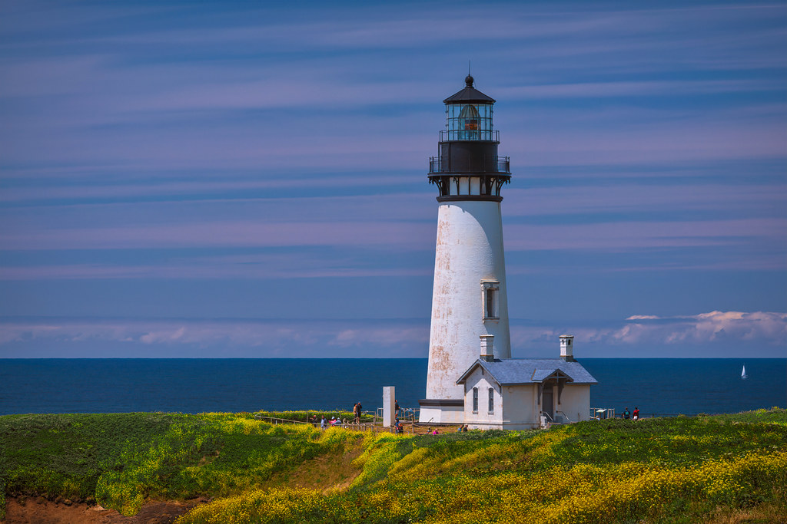
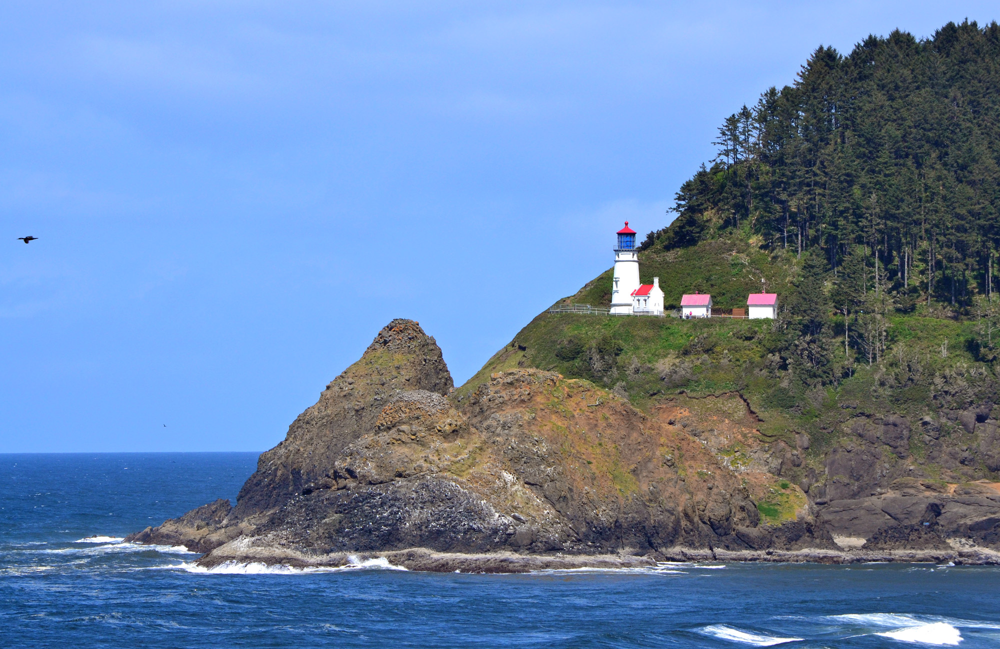
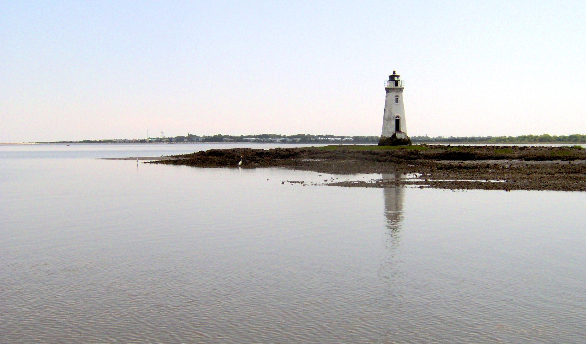
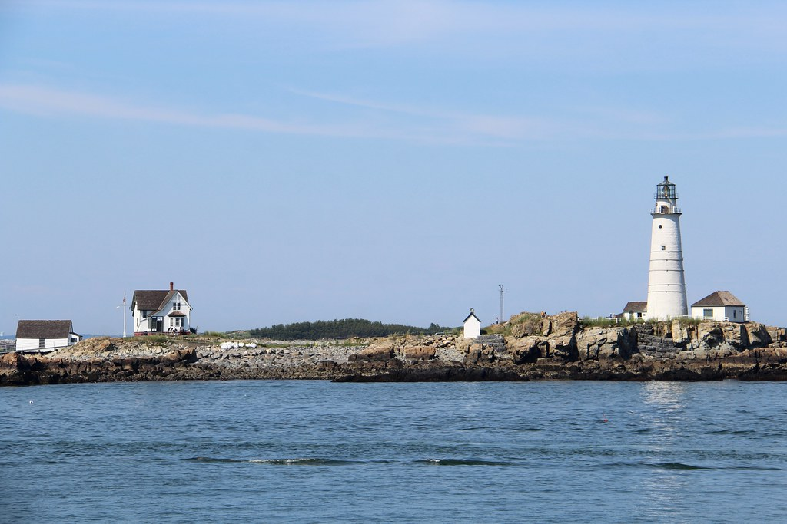
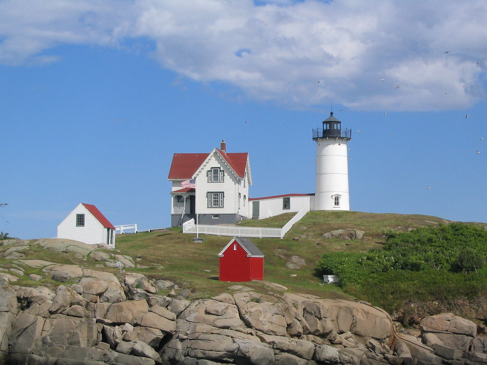

Jump to Main Content
- Yaquina Head, Oregon
- Heceta Head, Oregon
- Cockspur Island, Georgia
- Boston Light, Massachusetts
- Cape Neddick, Maine
Yaquina Head Lighthouse
Score: 47/50

- Craginess/Windswept: 5
- Sorrow: 5
- Height-to-Width Ratio: 4
- Interesting History: 5
- Likelihood of Being Haunted: 5
- Name of First Lighthouse Keeper: 5
- Lens Size: 5
- Quirkiness: 3
- Design Choices: 5
- Additional Subjective Points: 5
Heceta Head Lighthouse
Score: 45/50

- Craginess/Windswept: 5
- Sorrow: 5
- Height-to-Width Ratio: 4.5
- Interesting History: 5
- Likelihood of Being Haunted: 3
- Name of First Lighthouse Keeper: 2.5
- Lens Size: 5
- Quirkiness: 3
- Design Choices: 5
- Additional Subjective Points: 5
Yaquina Head Lighthouse
Score: 45/50

- Craginess/Windswept: 4
- Sorrow: 5
- Height-to-Width Ratio: 4
- Interesting History: 5
- Likelihood of Being Haunted: 4.5
- Name of First Lighthouse Keeper: 5
- Lens Size: 2.5
- Quirkiness: 5
- Design Choices: 5
- Additional Subjective Points: 5
Boston Light
Score: 44/50

- Craginess/Windswept: 4
- Sorrow: 4
- Height-to-Width Ratio: 5
- Interesting History: 5
- Likelihood of Being Haunted: 4
- Name of First Lighthouse Keeper: 5
- Lens Size: 3.5
- Quirkiness: 4
- Design Choices: 4.5
- Additional Subjective Points: 5
Cape Neddick Lighthouse
Score: 43.5/50

- Craginess/Windswept: 5
- Sorrow: 5
- Height-to-Width Ratio: 3.5
- Interesting History: 5
- Likelihood of Being Haunted: 5
- Name of First Lighthouse Keeper: 4
- Lens Size: 3
- Quirkiness: 4
- Design Choices: 4
- Additional Subjective Points: 5